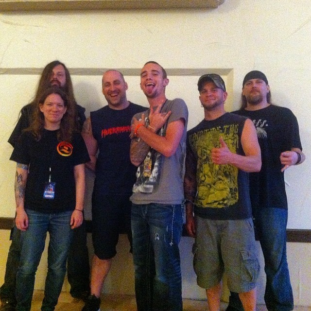

Zac
(The Riddler)
My name is Zachary Calhoun and at twenty-three years of age my feet cant seem to
stay on the ground since I am. I'm a proud Freak, Tattood Metal Head, Martial Artist
as well as an Artist(using this term to cover a wide spectrum of artistic fields.)
among other things. I was born in Louisiana and have not stayed in one
place for long since I was a baby. I have six siblings and I am the one of the
middle siblings.I love Nature and believe in only good vibes no matter the
situation the Universe will find a way.
I am a student at Bossier Parish Comunity College for programing.I am currently
working on a major game that not only will it keep the players entertained for
decades after its release but will literally be a game changer. I plan on having a
company of my own, that I will start with a few close friends. Eventually releasing
games, merchandise and apps all the while building our own empire. When not focusing on
school I am usually on my Xbox One and/or in outerspace thinking about the Universe,
existance, and this illusion we call reality. Never give in, stand strong, and follow your
dreams! No mattter others say/think/or believe about it!